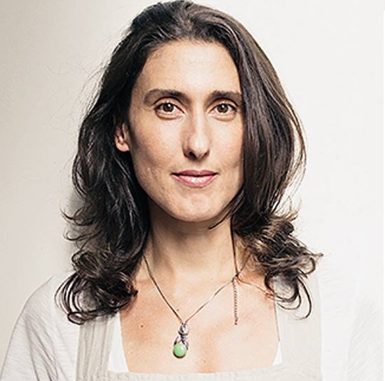

Vista o seu avental, afie suas facas, coloque sua playlist favorita e bora por a mão na massa!
Cozinhar sua própria comida te torna mais consciente sobre o que consome, te questiona de onde vem aquele alimento, como foi produzido e quem o plantou.
Em média, o brasileiro gasta cerca de 3 horas e meia em redes sociais. Dizer que não tem tempo para cozinhar é uma grande mentira.
Já tentou ler os ingredientes de alguma comida industrializada? Garanto que 1/3 daqueles ingredientes você não sabe nem pronunciar. Quando você cozinha, sabe exatamente o que está colocando para dentro do seu corpo.
Fazer sua própria comida é bem mais barato (e gostoso)! Sem falar que o que sobra pode virar marmita para o dia seguinte.
Achamos que temos um monte de desculpas para comprar comida pronta no supermercado ou para não cozinhar em casa. A verdade é que cozinhar é muito mais fácil do que parece. Paola Carosella
O único obstáculo real é o medo de falhar. Na cozinha, você precisar ter uma atitude de 'que se dane tudo'. Julia Child
Comida é aquilo que a sua avó chamaria de comida. Michael Pollan